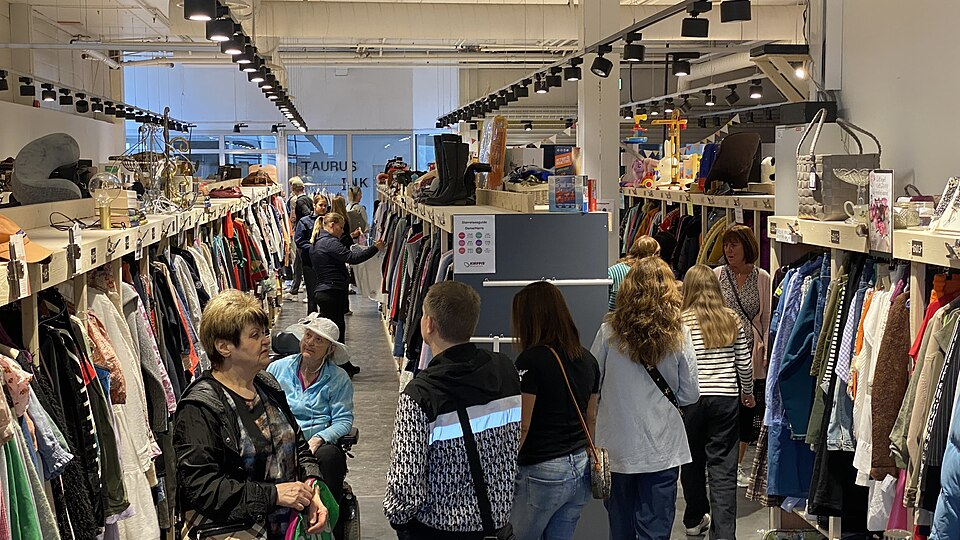

Pozdravljeni
Center ponovne uporabe (CPU)
Uporabljamo samo tisto, kar že obstaja.
Prinesi izdelke, ki jih ne potrebuješ več, mi pa jim poiščemo novega lastnika.
Kdo smo
Center ponovne uporabe (krajše CPU) je socialno podjetje s sedežem v Ormožu in enotami po Sloveniji. Zbira še uporabne izdelke, ki bi sicer končali med kosovnimi odpadki, jih pregleda, očisti, po potrebi popravi ali preoblikuje in nato po dostopnih cenah ponovno ponudi kupcem.


Komu je namenjen
Center ponovne uporabe je odprt za vse, posebej pa bo koristil:
- gospodinjstvom, ki se želijo znebiti pohištva, oblačil, knjig ali igrač, ki so še uporabni;
- kupcem, ki iščejo cenovno ugodne rabljene izdelke ali unikatne izdelke iz predelanih materialov;
- vsem, ki radi popravljajo, in tistim, ki bi se tega radi naučili (Repair Café);
- šolam, podjetjem in občinam, ki želijo sodelovati pri projektih krožnega gospodarstva.
Zakaj ponovna uporaba
Vsak izdelek, ki ga ponovno uporabimo, pomeni manj odpadkov in manj novih surovin. CPU s svojim delom:
- preprečuje nastajanje odpadkov in podaljšuje življenjsko dobo izdelkov,
- varčuje z naravnimi viri in zmanjšuje izpuste,
- ustvarja zelena delovna mesta, tudi za ljudi iz ranljivih skupin.
Kje najdeš več
Na strani Dejavnost preberi, kaj se zgodi z oddanimi izdelki in kako poteka Repair Café. Delovni čas in naslove vseh centrov najdeš med praktičnimi informacijami, vprašanje pa nam lahko pošlješ prek kontaktnega obrazca.